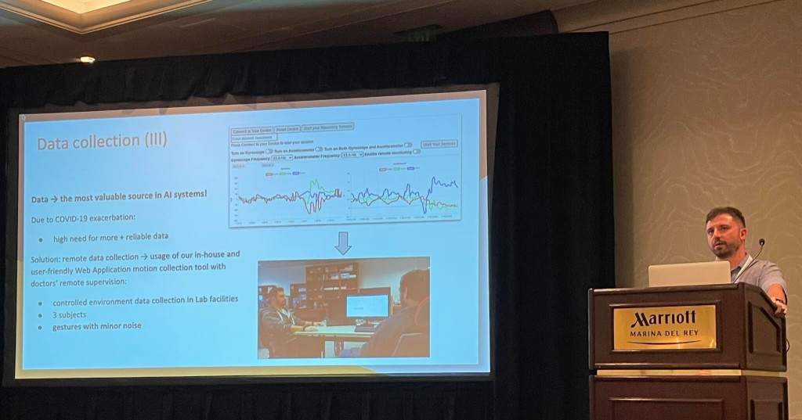

Publications

The same list with direct “Read paper” links is on the home page (Publications section).
Journals
Tzamalis, Pantelis, Nikolaos G. Papadopoulos, Cezmi A. Akdis, Mubeccel Akdis, Athanasios Damialis, Giuseppina Esposito, Ioana Fergadiotou, Christian Goroncy, et al. “Addressing adverse synergies between chemical and biological pollutants at schools—The ‘SynAir-G’ hypothesis.” Allergy 79, no. 2 (2024): 294-301. PubMed · Wiley
Kapetanidis, Panagiotis, Fotios Kalioras, Constantinos Tsakonas, Pantelis Tzamalis, George Kontogiannis, Theodora Karamanidou, Thanos G. Stavropoulos, and Sotiris Nikoletseas. “Respiratory Diseases Diagnosis Using Audio Analysis and Artificial Intelligence: A Systematic Review.” Sensors 24, no. 4 (2024): 1173. MDPI
Vlachos, Vasileios, Yannis C. Stamatiou, Pantelis Tzamalis, and Sotiris Nikoletseas. “The SAINT observatory subsystem: an open-source intelligence tool for uncovering cybersecurity threats.” International Journal of Information Security 21, no. 5 (2022): 1091-1106. Springer
International conference proceedings
Tzamalis, Pantelis, George Kontogiannis, and Sotiris Nikoletseas. “Exploring the Impact of Synthetic Data on Human Gesture Recognition Tasks Using GANs.” In 2024 20th International Conference on Distributed Computing in Smart Systems and the Internet of Things (DCOSS-IoT), 384-391. IEEE, 2024. IEEE Xplore
Tzamalis, Pantelis, Sotiris Nikoletseas, and Paul G. Spirakis. “GestureSet: Public Domain Dataset for Human Gesture Recognition using Wrist-worn Devices: A Preliminary Version.” In 2023 19th International Conference on Distributed Computing in Smart Systems and the Internet of Things (DCOSS-IoT), 404-413. IEEE, 2023. IEEE Xplore
Tzamalis, Pantelis, Andreas Bardoutsos, Dimitris Markantonatos, Christoforos Raptopoulos, Sotiris Nikoletseas, Xenophon Aggelides, and Nikos Papadopoulos. “End-to-end Gesture Recognition Framework for the Identification of Allergic Rhinitis Symptoms.” In 2022 18th International Conference on Distributed Computing in Sensor Systems (DCOSS), 25-34. IEEE, 2022. IEEE Xplore
Tzamalis, Pantelis, Andreas Bardoutsos, Giorgos Matzarapis, Sotiris Nikoletseas, and Paul G. Spirakis. “A Complementary Sensing Platform for a holistic approach to Allergic Rhinitis monitoring.” In 2021 17th International Conference on Distributed Computing in Sensor Systems (DCOSS), 171-180. IEEE, 2021. IEEE Xplore
Tzamalis, Pantelis, Andreas Bardoutsos, Dimitris Markantonatos, Sotiris Nikoletseas, and Paul G. Spirakis. “A human-centered Web-based tool for the effective real-time motion data collection and annotation from BLE IoT devices.” In 2021 17th International Conference on Distributed Computing in Sensor Systems (DCOSS), 380-389. IEEE, 2021. IEEE Xplore
Tzamalis, Pantelis, Ioannis Bothos, Vasileios Vlachos, Dimitris M. Kyriazanos, Ioannis Stamatiou, Konstantinos Georgios Thanos, Sotirios Nikoletseas, and Stelios CA Thomopoulos. “Modelling Cyber-Risk in an Economic Perspective.” In 2021 IEEE International Conference on Cyber Security and Resilience (CSR), 372-377. IEEE, 2021. IEEE Xplore
Tzamalis, Pantelis, Andreas Bardoutsos, Gabriel Filios, Ioannis Katsidimas, Thomas Krousarlis, and Sotiris Nikoletseas. “A multidimensional human-centric framework for environmental intelligence: Air pollution and noise in smart cities.” In 2020 16th International Conference on Distributed Computing in Sensor Systems (DCOSS), 155-164. IEEE, 2020. IEEE Xplore
Tzamalis, Pantelis, Xenophon Aggelides, Andreas Bardoutsos, Sotiris Nikoletseas, Nikos Papadopoulos, and Christoforos Raptopoulos. “A Gesture Recognition approach to classifying Allergic Rhinitis gestures using Wrist-worn Devices: a multidisciplinary case study.” In 2020 16th International Conference on Distributed Computing in Sensor Systems (DCOSS), 1-10. IEEE, 2020. IEEE Xplore
Tzamalis, Pantelis, Pantelis Vikatos, and Sotiris Nikoletseas. “A Hybridization of Mobile Crowdsensing, Twitter Analytics, and Sensor Data for the Holistic Approach of Pollen onsets Detection.” In 2019 15th International Conference on Distributed Computing in Sensor Systems (DCOSS), 188-191. IEEE, 2019. IEEE Xplore
Tzamalis, Pantelis, Vasileios Vlachos, Yannis C. Stamatiou, Sotiris Nikoletseas, and Kyriaki Chantzi. “A Social Network Analysis Tool for Uncovering Cybersecurity Threats.” In 6th International Symposium for ICS & SCADA Cyber Security Research, 97-106. 2019. ScienceOpen
Tzamalis, Pantelis, Lampros A. Kalogiros, Kostas Lagouvardos, Sotiris Nikoletseas, and Nikos Papadopoulos. “Allergymap: a hybrid mHealth mobile crowdsensing system for allergic diseases epidemiology: a multidisciplinary case study.” In 2018 IEEE International Conference on Pervasive Computing and Communications Workshops (PerCom Workshops), 597-602. IEEE, 2018. IEEE Xplore
Demos / meeting abstracts
Aggelides, Xenophon, Paraskevi Xepapadaki, Pavlos Vidalis, Nikoletta Rovina, Nikolaos Gavogiannakis, Sotiris Nikoletseas and Pantelis Tzamalis. “Personal Allergy Tracker (PAT): Description of a study protocol utilizing m-Health technology for monitoring allergic rhinitis. Can mobile technology improve control?.” In ALLERGY, vol. 75, pp. 52-53. Wiley, 2020.